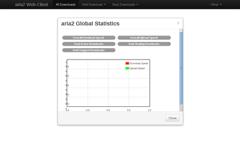
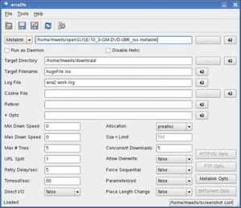
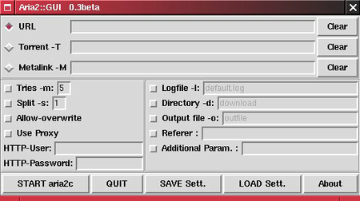

aria2
Dieser Artikel wurde für die folgenden Ubuntu-Versionen getestet:
Ubuntu 16.04 Xenial Xerus
Ubuntu 14.04 Trusty Tahr
Zum Verständnis dieses Artikels sind folgende Seiten hilfreich:
 aria2
aria2  ist ein kommandozeilenbasierter Download-Manager. Es handelt sich dabei um die Weiterentwicklung des inzwischen eingestellten Programms aria. Im Gegensatz zu aria unterstützt es sowohl segmentielles Herunterladen als auch das BitTorrent-Protokoll und Metalinks. aria2 kann eine Datei von mehreren URLs oder über mehrere Verbindungen herunterladen.
ist ein kommandozeilenbasierter Download-Manager. Es handelt sich dabei um die Weiterentwicklung des inzwischen eingestellten Programms aria. Im Gegensatz zu aria unterstützt es sowohl segmentielles Herunterladen als auch das BitTorrent-Protokoll und Metalinks. aria2 kann eine Datei von mehreren URLs oder über mehrere Verbindungen herunterladen.
Während aria eine auf GTK+-basierende grafische Oberfläche besaß, verfügt aria2 nur über eine Kommandozeile. Es existieren jedoch grafische Oberflächen, die mit Qt und Tk umgesetzt wurden. Dadurch verbraucht aria2 weniger Ressourcen. Die physische Speicherauslastung liegt zwischen 3 MB (normale HTTP/FTP-Downloads) bis 5 MB (BitTorrent-Downloads), die CPU-Auslastung in BitTorrent bei einer Downloadgeschwindigkeit von 500 KB/s liegt bei ca. 7%. Seit der Version 0.7.1 unterstützt aria2 auch asynchrone DNS mittels c-ares oder ares. Dies verbessert die Download-Performance von segmentierten Downloads, besonders bei Metalink-Downloads.
Die wichtigsten Funktionen sind:
|  |
| webui-aria2 |
Kommandozeileninterface
lädt Dateien von HTTP/HTTPS/FTP/BitTorrent
HTTP Proxy-Unterstützung
FTP über HTTP-Proxy
unterstützt HTTP BASIC-Authentifizierung
unterstützt HTTP Proxy-Authentifizierung
segmentiertes Downloaden
Downloadgeschwindigkeitsbegrenzung
Uploadgeschwindigkeitsbegrenzung in BitTorrent
unterstützt Cookies
Cookies werden aus Dateien geladen, welche das Netspace- bzw. Mozilla-Format verwenden
läuft als Dienst
selektives Downloaden in Torrents/Metalinks mit mehreren Dateien
Unterstützung für BitTorrent fast extension
unterstützt Multitracker
unterstützt Metalink version 3.0 (HTTP/FTP/BitTorrent)
Validierung von Checksummen von Chunks und in Metalinks
segmentiertes Downloaden kann in Metalinks deaktiviert werden
netrc-Unterstützung
über Konfigurationsdatei einstellbar
lädt URIs, die in einer Textdatei oder in stdin gefunden werden, herunter
parametisierte URI-Unterstützung
Installation¶
Aria2 ist in den offiziellen Paketquellen enthalten [1]:
aria2 (universe )
 mit apturl
mit apturl
Paketliste zum Kopieren:
sudo apt-get install aria2
sudo aptitude install aria2
PPA¶
Eventuell ist eine aktuellere Programmversion über ein "Personal Package Archiv" (PPA) [2] verfügbar.
Adresszeile zum Hinzufügen des PPAs:
ppa:t-tujikawa/ppa
Hinweis!
Zusätzliche Fremdquellen können das System gefährden.
Ein PPA unterstützt nicht zwangsläufig alle Ubuntu-Versionen. Weitere Informationen sind der  PPA-Beschreibung des Eigentümers/Teams t-tujikawa zu entnehmen.
PPA-Beschreibung des Eigentümers/Teams t-tujikawa zu entnehmen.
Damit Pakete aus dem PPA genutzt werden können, müssen die Paketquellen neu eingelesen werden.
Nach dem Aktualisieren der Paketquellen erfolgt die Installation wie oben angegeben.
Grafische Oberflächen¶
Für aria2 existieren zwei, inzwischen veraltete grafische Benutzeroberflächen. Aktuell und empfohlen wird webui-aria2.
|  |  |
| Quelle | Quelle |
Tk-Oberfläche¶
Zunächst muss man die Tk-Bibliotheken für Perl installieren:
perl-tk (universe)
mit apturl
Paketliste zum Kopieren:
sudo apt-get install perl-tk
sudo aptitude install perl-tk
Mit
perl aria2\:\:gui.pl
lässt sich das Programm starten.
webui-aria2¶
Im Rahmen des GSOC ist 2012 webui-aria2 entstanden. Als "Benutzeroberfläche" dient hier der vorinstallierte Webbrowser.
Benutzung¶
aria2 ist ein Kommandozeilenprogramm, welches über folgenden Befehl im Terminal [3] gestartet wird:
aria2c [OPTIONS] URL ... aria2c [OPTIONS] -T TORRENT_FILE FILE ... aria2c [OPTIONS] -M METALINK_FILE ...
Segmentiertes Downloaden über HTTP/FTP¶
Eine Datei wird nach diesem Schema heruntergeladen:
aria2c http://HOST/DATEI.TYP
Um einen Download zu pausieren, drückt man Strg + C . Man kann den Transfer fortsetzen, indem man aria2c mit den selben Argumenten im selben Verzeichnis aufruft. Die URLs können nur solange geändert werden, wie sie auf die gleiche Datei zeigen.
aria2c -s 2 http://host/file.zip #lädt eine Datei über 2 Verbindungen herunter aria2c http://host1/file.zip http://host2/file.zip #lädt eine Datei von zwei verschiedenen HTTP Servern aria2c http://host1/file.zip ftp://host2/file.zip #lädt eine Datei von HTTP- und FTP-Servern aria2c -i files.txt -j 5 #lädt Dateien, die sich in einer Datei befinden
Der Schalter -j spezifiziert die Anzahl der parallelen Downloads.
Metalink-Download¶
aria2c http://host/file.metalink #lädt Dateien mit einem Metalink aria2c --follow-metalink=mem http://host/file.metalink #lädt Dateien mit einem Metalink; die Metalink-Datei wird im Speicher bearbeitet aria2c -p -t 10 --lowest-speed-limit 4000 -M test.metalink #lädt mittels einer lokalen Metalink-Datei aria2c -M test.metalink dir/file1.zip dir/file2.zip #lädt nur bestimmte Dateien aus einem Metalink
Um die Dateinamen anzuzeigen, muss man den Schalter -S verwenden:
aria2c -M test.metalink --select-file 1-4,8 #lädt bestimmte Dateien mittels des Index
Der Index kann mit dem Schalter -S ausgegeben werden.
BitTorrent-Download¶
aria2c -o test.torrent http://site/file.torrent #lädt Dateien von einer BitTorrent Datei aria2c --follow-torrent=mem http://site/file.torrent #lädt Dateien von einer BitTorrent-Datei, welche im Speicher bearbeitet wird aria2c --max-upload-limit 40K -T file.torrent #lädt von einer lokalen BitTorrent-Datei
--max-upload-limit spezifiziert die maximale Uploadrate.
aria2c -T test.torrent dir/file1.zip dir/file2.zip #Selektives Laden von Dateien in einem Torrent aria2c -T test.torrent --select-file 1-4,8 #Selektives Laden mithilfe des Indexes aria2c -T test.torrent --listen-port 6881-6883 #Wechsel den Listening-Port für eingehende Verbindungen aria2c -T test.torrent --max-upload-limit 100K #Uploadgeschwindigkeit begrenzen
Hinweis:
Man muss sicherstellen, dass die Ports für eingehende bzw. ausgehenden TCP-Verkehr geöffnet sind.
Programm unter bestimmten Umständen schließen¶
Festlegen, wann das Programm schließen soll, sobald der Torrentdownload abgeschlossen wurde.
aria2c -T test.torrent --seed-time 120 --seed-ratio 1.0
Im Beispiel beendet das Programm, wenn 120 Minuten nach Abschließen des Downloads überschritten sind oder der Seed-Ratio 1.0 erreicht.
Eine bereits heruntergeladene Datei seeden¶
Man kann eine bereits heruntergeladene Datei mithilfe des --check-integrity=true-Schalters seeden:
aria2c --check-integrity=true -d /path/to/dir -T file.torrent
HTTP-Features¶
aria2c --load-cookies cookies.txt http://AAA.BBB.CCC/file.zip #Cookies aus Datei laden
Hinweis:
Man kann die Cookie-Datei von Firefox bzw. Mozilla ohne jegliche Änderungen verwenden.
Download fortsetzen, welcher von Browsern oder anderen Programmen begonnen wurde.
aria2c -c -s 2 http://host/partiallydownloadedfile.zip #von einem anderen Programm begonnenen Download fortsetzen aria2c -M test.metalink --max-download-limit 100K #Downloadgeschwindigkeit begrenzen aria2c -M test.metalink --check-integrity=true #beschädigte Datei reparieren aria2c -M test.metalink --lowest-speed-limit 10K #Verbindung abbrechen, sobald die Downloadgeschwindigkeit einen bestimmten Wert erreicht
Hinweis:
Die Option --check-integrity ist nur verfügbar, wenn man BitTorrent oder Metalinks mit Chunk-Checksummen verwendet.
Parametisierte URI-Unterstützung¶
aria2c -P http://{host1,host2,host3}/file.iso #Ketten von Teilen einer Datei festlegen
aria2c -Z -P http://host/image[000-100].png #numerische Sequenz mittels [] festlegen
aria2c -Z -P http://host/image[A-Z:2].png #Schrittzähler verwenden -Z wird benötigt, wenn alle URIs nicht zur selben Datei zeigen (wie im zweiten Beispiel).
Konfigurationsdatei¶
Wenn bestimmte Optionen häufiger benutzt werden, können diese auch in die aria2-Konfigurationsdatei ~/.aria2/aria2.conf eingetragen werden [4]. Jede Zeile stellt einen Parameter in der Syntax Name=Wert dar. Somit lassen sich alle Kommandozeilen-Optionen, die das Präfix -- besitzen, verwenden. Zeilen, die mit einem Rautenzeichen (#) beginnen, werden als Kommentare behandelt. Beispiel:
#Beispielkonfigurationsdatei für aria2c file-allocation=prealloc listen-port=60000 seed-ratio=1.0 max-upload-limit=40K ftp-pasv=true
Alle Kommandozeilen-Optionen können in der Manpage von aria2c nachgelesen werden.
aria2 in Firefox integrieren¶
Mittels der Erweiterung FlashGot für Firefox kann man Downloads direkt aus dem Browser heraus in einem Terminal starten. Hierzu geht man nach der Installation von FlashGot im Firefox auf "Extras -> FlashGot -> Weitere Einstellungen". Dort klickt man auf "Hinzufügen" und gibt z.B. "aria2" ein. Anschließend muss man den Ort des gewünschten Download-Managers eingeben, hier wählt man den Ort des Terminals:
/usr/bin/x-terminal-emulator
Unter "Vorlage für Parameter" gibt man dann den eigentlichen Befehl ein. Dabei sorgt -e dafür, dass der darauf folgende Befehl an das Terminal übergeben wird. Es können hier, wie oben beschrieben, Optionen an aria2 übergeben werden. Beispiel:
-e aria2c -s 3 -d ~/Downloads [URL]
aria2 würde hier drei Verbindungen verwenden und alle Downloads in /home/BENUTZERNAME/Downloads im Homeverzeichnis speichern. [URL] dient als Platzhalter für FlashGot.
Links¶
Aria2 - Make your linux box a 24×7 downloader
- Blogbeitrag, 08/2013Download-Manager
 Übersichtsartikel
Übersichtsartikel
- Erstellt mit Inyoka
-
 2004 – 2017 ubuntuusers.de • Einige Rechte vorbehalten
2004 – 2017 ubuntuusers.de • Einige Rechte vorbehalten
Lizenz • Kontakt • Datenschutz • Impressum • Serverstatus -
Serverhousing gespendet von